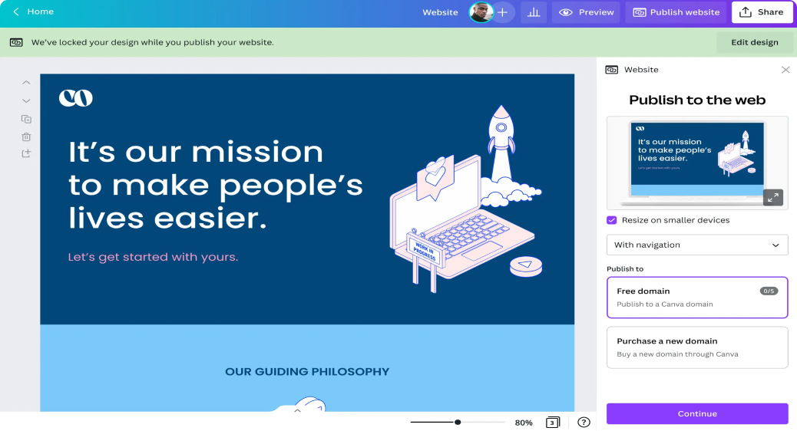

Wrike
Compañia pequeña que ofrece un software comercial, corporativo y administrativo para pequeñas y medianas empresas.
Compañia pequeña que ofrece un software comercial y corporativo. El diseño comprensible refleja tanto los servicios de la empresa como de su producto estrella, el software. La intención era plasmar la paleta de colores y estetica de la compañia.
Herramientas usadas: